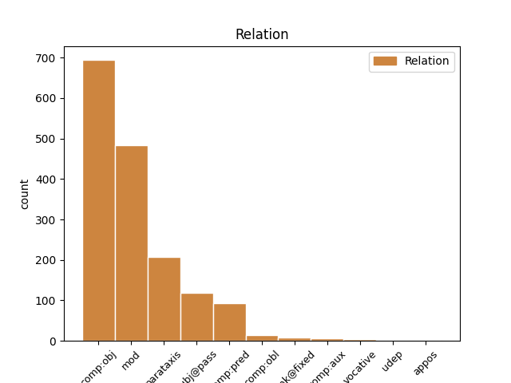
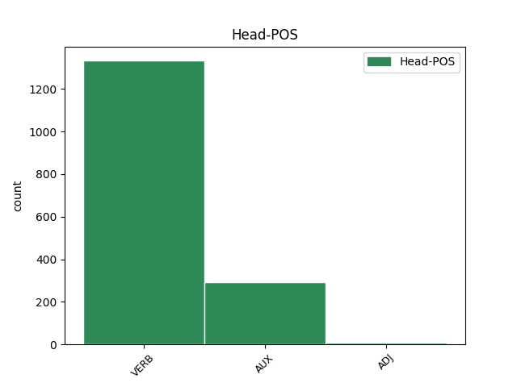
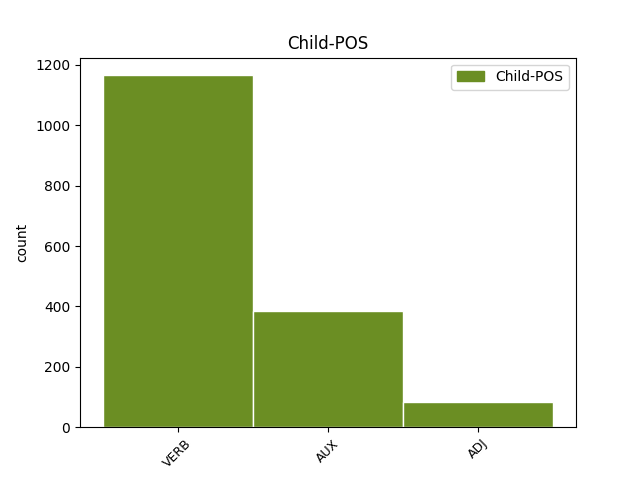

Distribution of features within this leaf



Agreement Rules sorted by frequency.
- When the dependent token is the direct object complements(comp:obj) of the head token, and the head token is VERB and the dependent token is VERB.
1 ac _ _ _ _ 0 _ _ _
2 videat video VERB V- Mood=Sub|Number=Sing|Person=3|Tense=Pres|VerbForm=Fin|Voice=Act 0 _ _ _
3 in _ _ _ _ 0 _ _ _
4 primis _ _ _ _ 0 _ _ _
5 quibus _ _ _ _ 0 _ _ _
6 de _ _ _ _ 0 _ _ _
7 rebus _ _ _ _ 0 _ _ _
8 loquatur loquor VERB V- Mood=Sub|Number=Sing|Person=3|Tense=Pres|VerbForm=Fin|Voice=Pass 2 comp:obj _ ref=1.134
1 Quidam _ _ _ _ 0 _ _ _
2 autem _ _ _ _ 0 _ _ _
3 ad _ _ _ _ 0 _ _ _
4 eas _ _ _ _ 0 _ _ _
5 laudes _ _ _ _ 0 _ _ _
6 quas _ _ _ _ 0 _ _ _
7 a _ _ _ _ 0 _ _ _
8 patribus _ _ _ _ 0 _ _ _
9 acceperunt _ _ _ _ 0 _ _ _
10 addunt addo VERB V- Mood=Ind|Number=Plur|Person=3|Tense=Pres|VerbForm=Fin|Voice=Act 0 _ _ _
11 aliquam _ _ _ _ 0 _ _ _
12 suam _ _ _ _ 0 _ _ _
13 ut _ _ _ _ 0 _ _ _
14 hic _ _ _ _ 0 _ _ _
15 idem _ _ _ _ 0 _ _ _
16 Africanus _ _ _ _ 0 _ _ _
17 eloquentia _ _ _ _ 0 _ _ _
18 cumulavit cumulo VERB V- Aspect=Perf|Mood=Ind|Number=Sing|Person=3|Tense=Past|VerbForm=Fin|Voice=Act 10 mod _ ref=1.116
19 bellicam _ _ _ _ 0 _ _ _
20 gloriam _ _ _ _ 0 _ _ _
1 Ex _ _ _ _ 0 _ _ _
2 quo _ _ _ _ 0 _ _ _
3 magis _ _ _ _ 0 _ _ _
4 emergit emergo VERB V- Mood=Ind|Number=Sing|Person=3|Tense=Pres|VerbForm=Fin|Voice=Act 0 _ _ _
5 quale _ _ _ _ 0 _ _ _
6 sit sum AUX V- Mood=Sub|Number=Sing|Person=3|Tense=Pres|VerbForm=Fin|Voice=Act 4 comp:obj _ ref=1.110
7 decorum _ _ _ _ 0 _ _ _
8 illud _ _ _ _ 0 _ _ _
9 ideo _ _ _ _ 0 _ _ _
10 quia _ _ _ _ 0 _ _ _
11 nihil _ _ _ _ 0 _ _ _
12 decet _ _ _ _ 0 _ _ _
13 invita _ _ _ _ 0 _ _ _
14 Minerva _ _ _ _ 0 _ _ _
15 ut _ _ _ _ 0 _ _ _
16 aiunt _ _ _ _ 0 _ _ _
17 id _ _ _ _ 0 _ _ _
18 est _ _ _ _ 0 _ _ _
19 adversante _ _ _ _ 0 _ _ _
20 et _ _ _ _ 0 _ _ _
21 repugnante _ _ _ _ 0 _ _ _
22 natura _ _ _ _ 0 _ _ _
1 Quocirca _ _ _ _ 0 _ _ _
2 non _ _ _ _ 0 _ _ _
3 sine _ _ _ _ 0 _ _ _
4 causa _ _ _ _ 0 _ _ _
5 maiores _ _ _ _ 0 _ _ _
6 motus _ _ _ _ 0 _ _ _
7 animorum _ _ _ _ 0 _ _ _
8 concitantur concito VERB V- Mood=Ind|Number=Plur|Person=3|Tense=Pres|VerbForm=Fin|Voice=Pass 0 _ _ _
9 maiora _ _ _ _ 0 _ _ _
10 que _ _ _ _ 0 _ _ _
11 studia _ _ _ _ 0 _ _ _
12 efficiendi _ _ _ _ 0 _ _ _
13 rem _ _ _ _ 0 _ _ _
14 publicam _ _ _ _ 0 _ _ _
15 gerentibus _ _ _ _ 0 _ _ _
16 quam _ _ _ _ 0 _ _ _
17 quietis _ _ _ _ 0 _ _ _
18 quo _ _ _ _ 0 _ _ _
19 magis _ _ _ _ 0 _ _ _
20 iis _ _ _ _ 0 _ _ _
21 et _ _ _ _ 0 _ _ _
22 magnitudo _ _ _ _ 0 _ _ _
23 est sum AUX V- Mood=Ind|Number=Sing|Person=3|Tense=Pres|VerbForm=Fin|Voice=Act 8 mod _ ref=1.73
24 animi _ _ _ _ 0 _ _ _
25 adhibenda _ _ _ _ 0 _ _ _
26 et _ _ _ _ 0 _ _ _
27 vacuitas _ _ _ _ 0 _ _ _
28 ab _ _ _ _ 0 _ _ _
29 angoribus _ _ _ _ 0 _ _ _
1 Perfectum _ _ _ _ 0 _ _ _
2 officium _ _ _ _ 0 _ _ _
3 rectum _ _ _ _ 0 _ _ _
4 opinor opinor VERB V- Mood=Ind|Number=Sing|Person=1|Tense=Pres|VerbForm=Fin|Voice=Pass 5 parataxis _ ref=1.8
5 vocemus voco VERB V- Mood=Sub|Number=Plur|Person=1|Tense=Pres|VerbForm=Fin|Voice=Act 0 _ _ _
6 quoniam _ _ _ _ 0 _ _ _
7 Graeci _ _ _ _ 0 _ _ _
8 κατόρθωμα _ _ _ _ 0 _ _ _
1 Quicquid _ _ _ _ 0 _ _ _
2 est sum AUX V- Mood=Ind|Number=Sing|Person=3|Tense=Pres|VerbForm=Fin|Voice=Act 0 _ _ _
3 enim _ _ _ _ 0 _ _ _
4 quod _ _ _ _ 0 _ _ _
5 deceat decet VERB V- Mood=Sub|Number=Sing|Person=3|Tense=Pres|VerbForm=Fin|Voice=Act 2 comp:pred _ ref=1.94
6 id _ _ _ _ 0 _ _ _
7 tum _ _ _ _ 0 _ _ _
8 apparet _ _ _ _ 0 _ _ _
9 cum _ _ _ _ 0 _ _ _
10 antegressa _ _ _ _ 0 _ _ _
11 est _ _ _ _ 0 _ _ _
12 honestas _ _ _ _ 0 _ _ _
1 Quarum _ _ _ _ 0 _ _ _
2 ex _ _ _ _ 0 _ _ _
3 vestigiis _ _ _ _ 0 _ _ _
4 cum _ _ _ _ 0 _ _ _
5 est sum AUX V- Mood=Ind|Number=Sing|Person=3|Tense=Pres|VerbForm=Fin|Voice=Act 0 _ _ _
6 animadversum _ _ _ _ 0 _ _ _
7 a _ _ _ _ 0 _ _ _
8 venatoribus _ _ _ _ 0 _ _ _
9 quo _ _ _ _ 0 _ _ _
10 se _ _ _ _ 0 _ _ _
11 recipere _ _ _ _ 0 _ _ _
12 consuerint consuesco VERB V- Aspect=Perf|Mood=Sub|Number=Plur|Person=3|Tense=Past|VerbForm=Fin|Voice=Act 5 subj@pass _ ref=6.27.4
13 omnes _ _ _ _ 0 _ _ _
14 eo _ _ _ _ 0 _ _ _
15 loco _ _ _ _ 0 _ _ _
16 aut _ _ _ _ 0 _ _ _
17 ab _ _ _ _ 0 _ _ _
18 radicibus _ _ _ _ 0 _ _ _
19 subruunt _ _ _ _ 0 _ _ _
20 aut _ _ _ _ 0 _ _ _
21 accidunt _ _ _ _ 0 _ _ _
22 arbores _ _ _ _ 0 _ _ _
23 tantum _ _ _ _ 0 _ _ _
24 ut _ _ _ _ 0 _ _ _
25 summa _ _ _ _ 0 _ _ _
26 species _ _ _ _ 0 _ _ _
27 earum _ _ _ _ 0 _ _ _
28 stantium _ _ _ _ 0 _ _ _
29 relinquatur _ _ _ _ 0 _ _ _
1 Atque _ _ _ _ 0 _ _ _
2 etiam _ _ _ _ 0 _ _ _
3 si _ _ _ _ 0 _ _ _
4 quid _ _ _ _ 0 _ _ _
5 singuli _ _ _ _ 0 _ _ _
6 temporibus _ _ _ _ 0 _ _ _
7 adducti _ _ _ _ 0 _ _ _
8 hosti _ _ _ _ 0 _ _ _
9 promiserunt _ _ _ _ 0 _ _ _
10 est sum AUX V- Mood=Ind|Number=Sing|Person=3|Tense=Pres|VerbForm=Fin|Voice=Act 0 _ _ _
11 in _ _ _ _ 0 _ _ _
12 eo _ _ _ _ 0 _ _ _
13 ipso _ _ _ _ 0 _ _ _
14 fides _ _ _ _ 0 _ _ _
15 conservanda _ _ _ _ 0 _ _ _
16 ut _ _ _ _ 0 _ _ _
17 primo _ _ _ _ 0 _ _ _
18 Punico _ _ _ _ 0 _ _ _
19 bello _ _ _ _ 0 _ _ _
20 Regulus _ _ _ _ 0 _ _ _
21 captus _ _ _ _ 0 _ _ _
22 a _ _ _ _ 0 _ _ _
23 Poenis _ _ _ _ 0 _ _ _
24 cum _ _ _ _ 0 _ _ _
25 de _ _ _ _ 0 _ _ _
26 captivis _ _ _ _ 0 _ _ _
27 commutandis _ _ _ _ 0 _ _ _
28 Romam _ _ _ _ 0 _ _ _
29 missus _ _ _ _ 0 _ _ _
30 esset _ _ _ _ 0 _ _ _
31 iurasset _ _ _ _ 0 _ _ _
32 que _ _ _ _ 0 _ _ _
33 se _ _ _ _ 0 _ _ _
34 rediturum _ _ _ _ 0 _ _ _
35 primum _ _ _ _ 0 _ _ _
36 ut _ _ _ _ 0 _ _ _
37 venit _ _ _ _ 0 _ _ _
38 captivos _ _ _ _ 0 _ _ _
39 reddendos _ _ _ _ 0 _ _ _
40 in _ _ _ _ 0 _ _ _
41 senatu _ _ _ _ 0 _ _ _
42 non _ _ _ _ 0 _ _ _
43 censuit censeo VERB V- Aspect=Perf|Mood=Ind|Number=Sing|Person=3|Tense=Past|VerbForm=Fin|Voice=Act 10 mod _ ref=1.39
44 deinde _ _ _ _ 0 _ _ _
45 cum _ _ _ _ 0 _ _ _
46 retineretur _ _ _ _ 0 _ _ _
47 a _ _ _ _ 0 _ _ _
48 propinquis _ _ _ _ 0 _ _ _
49 et _ _ _ _ 0 _ _ _
50 ab _ _ _ _ 0 _ _ _
51 amicis _ _ _ _ 0 _ _ _
52 ad _ _ _ _ 0 _ _ _
53 supplicium _ _ _ _ 0 _ _ _
54 redire _ _ _ _ 0 _ _ _
55 maluit _ _ _ _ 0 _ _ _
56 quam _ _ _ _ 0 _ _ _
57 fidem _ _ _ _ 0 _ _ _
58 hosti _ _ _ _ 0 _ _ _
59 datam _ _ _ _ 0 _ _ _
60 fallere _ _ _ _ 0 _ _ _
1 itaque _ _ _ _ 0 _ _ _
2 alter _ _ _ _ 0 _ _ _
3 semper _ _ _ _ 0 _ _ _
4 magnus _ _ _ _ 0 _ _ _
5 alter _ _ _ _ 0 _ _ _
6 saepe _ _ _ _ 0 _ _ _
7 turpissimus _ _ _ _ 0 _ _ _
8 ut _ _ _ _ 0 _ _ _
9 recte _ _ _ _ 0 _ _ _
10 praecipere _ _ _ _ 0 _ _ _
11 videantur video VERB V- Mood=Sub|Number=Plur|Person=3|Tense=Pres|VerbForm=Fin|Voice=Pass 0 _ _ _
12 qui _ _ _ _ 0 _ _ _
13 monent moneo VERB V- Mood=Ind|Number=Plur|Person=3|Tense=Pres|VerbForm=Fin|Voice=Act 11 subj@pass _ ref=1.90
14 ut _ _ _ _ 0 _ _ _
15 quanto _ _ _ _ 0 _ _ _
16 superiores _ _ _ _ 0 _ _ _
17 simus _ _ _ _ 0 _ _ _
18 tanto _ _ _ _ 0 _ _ _
19 nos _ _ _ _ 0 _ _ _
20 geramus _ _ _ _ 0 _ _ _
21 summissius _ _ _ _ 0 _ _ _
1 Magna _ _ _ _ 0 _ _ _
2 etiam _ _ _ _ 0 _ _ _
3 illa _ _ _ _ 0 _ _ _
4 communitas _ _ _ _ 0 _ _ _
5 est _ _ _ _ 0 _ _ _
6 quae _ _ _ _ 0 _ _ _
7 conficitur _ _ _ _ 0 _ _ _
8 ex _ _ _ _ 0 _ _ _
9 beneficiis _ _ _ _ 0 _ _ _
10 ultro _ _ _ _ 0 _ _ _
11 et _ _ _ _ 0 _ _ _
12 citro _ _ _ _ 0 _ _ _
13 datis _ _ _ _ 0 _ _ _
14 acceptis _ _ _ _ 0 _ _ _
15 quae _ _ _ _ 0 _ _ _
16 et _ _ _ _ 0 _ _ _
17 mutua _ _ _ _ 0 _ _ _
18 et _ _ _ _ 0 _ _ _
19 grata _ _ _ _ 0 _ _ _
20 dum _ _ _ _ 0 _ _ _
21 sunt _ _ _ _ 0 _ _ _
22 inter _ _ _ _ 0 _ _ _
23 quos _ _ _ _ 0 _ _ _
24 ea _ _ _ _ 0 _ _ _
25 sunt sum AUX V- Mood=Ind|Number=Plur|Person=3|Tense=Pres|VerbForm=Fin|Voice=Act 27 subj@pass _ ref=1.56
26 firma _ _ _ _ 0 _ _ _
27 devinciuntur devincio VERB V- Mood=Ind|Number=Plur|Person=3|Tense=Pres|VerbForm=Fin|Voice=Pass 0 _ _ _
28 societate _ _ _ _ 0 _ _ _
1 Omnino _ _ _ _ 0 _ _ _
2 si _ _ _ _ 0 _ _ _
3 quicquam _ _ _ _ 0 _ _ _
4 est _ _ _ _ 0 _ _ _
5 decorum _ _ _ _ 0 _ _ _
6 nihil _ _ _ _ 0 _ _ _
7 est _ _ _ _ 0 _ _ _
8 profecto _ _ _ _ 0 _ _ _
9 magis _ _ _ _ 0 _ _ _
10 quam _ _ _ _ 0 _ _ _
11 aequabilitas _ _ _ _ 0 _ _ _
12 cum _ _ _ _ 0 _ _ _
13 universae _ _ _ _ 0 _ _ _
14 vitae _ _ _ _ 0 _ _ _
15 tum _ _ _ _ 0 _ _ _
16 singularum _ _ _ _ 0 _ _ _
17 actionum _ _ _ _ 0 _ _ _
18 quam _ _ _ _ 0 _ _ _
19 conservare _ _ _ _ 0 _ _ _
20 non _ _ _ _ 0 _ _ _
21 possis _ _ _ _ 0 _ _ _
22 si _ _ _ _ 0 _ _ _
23 aliorum _ _ _ _ 0 _ _ _
24 naturam _ _ _ _ 0 _ _ _
25 imitans _ _ _ _ 0 _ _ _
26 omittas omitto VERB V- Mood=Sub|Number=Sing|Person=2|Tense=Pres|VerbForm=Fin|Voice=Act 0 _ _ _
27 tuam tuus ADJ Ps Case=Acc|Gender=Fem|Number=Sing|Person=2|Poss=Yes 26 comp:obj _ ref=1.111
1 Nam _ _ _ _ 0 _ _ _
2 si _ _ _ _ 0 _ _ _
3 ut _ _ _ _ 0 _ _ _
4 in _ _ _ _ 0 _ _ _
5 fabulis _ _ _ _ 0 _ _ _
6 est sum AUX V- Mood=Ind|Number=Sing|Person=3|Tense=Pres|VerbForm=Fin|Voice=Act 17 mod _ ref=1.32
7 Neptunus _ _ _ _ 0 _ _ _
8 quod _ _ _ _ 0 _ _ _
9 Theseo _ _ _ _ 0 _ _ _
10 promiserat _ _ _ _ 0 _ _ _
11 non _ _ _ _ 0 _ _ _
12 fecisset _ _ _ _ 0 _ _ _
13 Theseus _ _ _ _ 0 _ _ _
14 Hippolyto _ _ _ _ 0 _ _ _
15 filio _ _ _ _ 0 _ _ _
16 non _ _ _ _ 0 _ _ _
17 esset sum AUX V- Aspect=Imp|Mood=Sub|Number=Sing|Person=3|Tense=Past|VerbForm=Fin|Voice=Act 0 _ _ _
18 orbatus _ _ _ _ 0 _ _ _
1 Quin _ _ _ _ 0 _ _ _
2 etiam _ _ _ _ 0 _ _ _
3 si _ _ _ _ 0 _ _ _
4 quis _ _ _ _ 0 _ _ _
5 est _ _ _ _ 0 _ _ _
6 paulo _ _ _ _ 0 _ _ _
7 ad _ _ _ _ 0 _ _ _
8 voluptates _ _ _ _ 0 _ _ _
9 propensior _ _ _ _ 0 _ _ _
10 modo _ _ _ _ 0 _ _ _
11 ne _ _ _ _ 0 _ _ _
12 sit _ _ _ _ 0 _ _ _
13 ex _ _ _ _ 0 _ _ _
14 pecudum _ _ _ _ 0 _ _ _
15 genere _ _ _ _ 0 _ _ _
16 sunt sum AUX V- Mood=Ind|Number=Plur|Person=3|Tense=Pres|VerbForm=Fin|Voice=Act 33 parataxis _ ref=1.105
17 enim _ _ _ _ 0 _ _ _
18 quidam _ _ _ _ 0 _ _ _
19 homines _ _ _ _ 0 _ _ _
20 non _ _ _ _ 0 _ _ _
21 re _ _ _ _ 0 _ _ _
22 sed _ _ _ _ 0 _ _ _
23 nomine _ _ _ _ 0 _ _ _
24 sed _ _ _ _ 0 _ _ _
25 si _ _ _ _ 0 _ _ _
26 quis _ _ _ _ 0 _ _ _
27 est _ _ _ _ 0 _ _ _
28 paulo _ _ _ _ 0 _ _ _
29 erectior _ _ _ _ 0 _ _ _
30 quamvis _ _ _ _ 0 _ _ _
31 voluptate _ _ _ _ 0 _ _ _
32 capiatur _ _ _ _ 0 _ _ _
33 occultat occulto VERB V- Mood=Ind|Number=Sing|Person=3|Tense=Pres|VerbForm=Fin|Voice=Act 0 _ _ _
34 et _ _ _ _ 0 _ _ _
35 dissimulat _ _ _ _ 0 _ _ _
36 appetitum _ _ _ _ 0 _ _ _
37 voluptatis _ _ _ _ 0 _ _ _
38 propter _ _ _ _ 0 _ _ _
39 verecundiam _ _ _ _ 0 _ _ _
1 nihil _ _ _ _ 0 _ _ _
2 est _ _ _ _ 0 _ _ _
3 damni _ _ _ _ 0 _ _ _
4 factum _ _ _ _ 0 _ _ _
5 novi _ _ _ _ 0 _ _ _
6 sed _ _ _ _ 0 _ _ _
7 quod _ _ _ _ 0 _ _ _
8 erat sum AUX V- Aspect=Imp|Mood=Ind|Number=Sing|Person=3|Tense=Past|VerbForm=Fin|Voice=Act 10 subj@pass _ ref=1.16.9
9 inventum _ _ _ _ 0 _ _ _
10 est sum AUX V- Mood=Ind|Number=Sing|Person=3|Tense=Pres|VerbForm=Fin|Voice=Act 0 _ _ _
1 quamquam _ _ _ _ 0 _ _ _
2 haec _ _ _ _ 0 _ _ _
3 quidem _ _ _ _ 0 _ _ _
4 res _ _ _ _ 0 _ _ _
5 non _ _ _ _ 0 _ _ _
6 solum _ _ _ _ 0 _ _ _
7 ex _ _ _ _ 0 _ _ _
8 domestica _ _ _ _ 0 _ _ _
9 est sum AUX V- Mood=Ind|Number=Sing|Person=3|Tense=Pres|VerbForm=Fin|Voice=Act 0 _ _ _
10 ratione _ _ _ _ 0 _ _ _
11 attingit attingo VERB V- Mood=Ind|Number=Sing|Person=3|Tense=Pres|VerbForm=Fin|Voice=Act 9 parataxis _ ref=1.76
12 etiam _ _ _ _ 0 _ _ _
13 bellicam _ _ _ _ 0 _ _ _
14 quoniam _ _ _ _ 0 _ _ _
15 vi _ _ _ _ 0 _ _ _
16 manu _ _ _ _ 0 _ _ _
17 que _ _ _ _ 0 _ _ _
18 confecta _ _ _ _ 0 _ _ _
19 est _ _ _ _ 0 _ _ _
20 sed _ _ _ _ 0 _ _ _
21 tamen _ _ _ _ 0 _ _ _
22 id _ _ _ _ 0 _ _ _
23 ipsum _ _ _ _ 0 _ _ _
24 est _ _ _ _ 0 _ _ _
25 gestum _ _ _ _ 0 _ _ _
26 consilio _ _ _ _ 0 _ _ _
27 urbano _ _ _ _ 0 _ _ _
28 sine _ _ _ _ 0 _ _ _
29 exercitu _ _ _ _ 0 _ _ _
1 hii _ _ _ _ 0 _ _ _
2 sunt sum AUX V- Mood=Ind|Number=Plur|Person=3|Tense=Pres|VerbForm=Fin|Voice=Act 0 _ _ _
3 qui _ _ _ _ 0 _ _ _
4 cum _ _ _ _ 0 _ _ _
5 mulieribus _ _ _ _ 0 _ _ _
6 non _ _ _ _ 0 _ _ _
7 sunt sum AUX V- Mood=Ind|Number=Plur|Person=3|Tense=Pres|VerbForm=Fin|Voice=Act 2 comp:pred _ ref=REV_14.4
8 coinquinati _ _ _ _ 0 _ _ _
1 Ludo _ _ _ _ 0 _ _ _
2 autem _ _ _ _ 0 _ _ _
3 et _ _ _ _ 0 _ _ _
4 ioco _ _ _ _ 0 _ _ _
5 uti _ _ _ _ 0 _ _ _
6 illo _ _ _ _ 0 _ _ _
7 quidem _ _ _ _ 0 _ _ _
8 licet _ _ _ _ 0 _ _ _
9 sed _ _ _ _ 0 _ _ _
10 sicut _ _ _ _ 0 _ _ _
11 somno _ _ _ _ 0 _ _ _
12 et _ _ _ _ 0 _ _ _
13 quietibus _ _ _ _ 0 _ _ _
14 ceteris _ _ _ _ 0 _ _ _
15 tum _ _ _ _ 0 _ _ _
16 cum _ _ _ _ 0 _ _ _
17 gravibus _ _ _ _ 0 _ _ _
18 seriis _ _ _ _ 0 _ _ _
19 que _ _ _ _ 0 _ _ _
20 rebus _ _ _ _ 0 _ _ _
21 satis satisfacio VERB V- Aspect=Perf|Mood=Sub|Number=Plur|Person=1|Tense=Past|VerbForm=Fin|Voice=Act 0 _ _ _
22 fecerimus fecerimus VERB V- Aspect=Perf|Mood=Sub|Number=Plur|Person=1|Tense=Past|VerbForm=Fin|Voice=Act 21 unk@fixed _ ref=1.103
1 id _ _ _ _ 0 _ _ _
2 enim _ _ _ _ 0 _ _ _
3 maxime _ _ _ _ 0 _ _ _
4 quemque _ _ _ _ 0 _ _ _
5 decet _ _ _ _ 0 _ _ _
6 quod _ _ _ _ 0 _ _ _
7 est sum AUX V- Mood=Ind|Number=Sing|Person=3|Tense=Pres|VerbForm=Fin|Voice=Act 0 _ _ _
8 cuiusque _ _ _ _ 0 _ _ _
9 maxime _ _ _ _ 0 _ _ _
10 suum suus ADJ Pt Case=Nom|Gender=Neut|Number=Sing|Person=3|Poss=Yes|Reflex=Yes 7 comp:pred _ ref=1.113
1 ipse _ _ _ _ 0 _ _ _
2 est sum AUX V- Mood=Ind|Number=Sing|Person=3|Tense=Pres|VerbForm=Fin|Voice=Act 7 comp:aux _ ref=JOHN_1.27
3 qui _ _ _ _ 0 _ _ _
4 post _ _ _ _ 0 _ _ _
5 me _ _ _ _ 0 _ _ _
6 venturus _ _ _ _ 0 _ _ _
7 est sum AUX V- Mood=Ind|Number=Sing|Person=3|Tense=Pres|VerbForm=Fin|Voice=Act 0 _ _ _
8 qui _ _ _ _ 0 _ _ _
9 ante _ _ _ _ 0 _ _ _
10 me _ _ _ _ 0 _ _ _
11 factus _ _ _ _ 0 _ _ _
12 est _ _ _ _ 0 _ _ _
13 cuius _ _ _ _ 0 _ _ _
14 ego _ _ _ _ 0 _ _ _
15 non _ _ _ _ 0 _ _ _
16 sum _ _ _ _ 0 _ _ _
17 dignus _ _ _ _ 0 _ _ _
18 ut _ _ _ _ 0 _ _ _
19 solvam _ _ _ _ 0 _ _ _
20 eius _ _ _ _ 0 _ _ _
21 corrigiam _ _ _ _ 0 _ _ _
22 calciamenti _ _ _ _ 0 _ _ _
1 Qua _ _ _ _ 0 _ _ _
2 re _ _ _ _ 0 _ _ _
3 nuntiata _ _ _ _ 0 _ _ _
4 Caesar _ _ _ _ 0 _ _ _
5 omnem _ _ _ _ 0 _ _ _
6 ex _ _ _ _ 0 _ _ _
7 castris _ _ _ _ 0 _ _ _
8 equitatum _ _ _ _ 0 _ _ _
9 suis suus ADJ Pt Case=Dat|Gender=Masc|Number=Plur|Person=3|Poss=Yes|Reflex=Yes 11 comp:obl _ ref=4.37.2
10 auxilio _ _ _ _ 0 _ _ _
11 misit mitto VERB V- Aspect=Perf|Mood=Ind|Number=Sing|Person=3|Tense=Past|VerbForm=Fin|Voice=Act 0 _ _ _
1 Areae _ _ _ _ 0 _ _ _
2 faciendae _ _ _ _ 0 _ _ _
3 sunt sum AUX V- Mood=Ind|Number=Plur|Person=3|Tense=Pres|VerbForm=Fin|Voice=Act 0 _ _ _
4 angustiores _ _ _ _ 0 _ _ _
5 et _ _ _ _ 0 _ _ _
6 longae _ _ _ _ 0 _ _ _
7 id _ _ _ _ 0 _ _ _
8 est sum AUX V- Mood=Ind|Number=Sing|Person=3|Tense=Pres|VerbForm=Fin|Voice=Act 3 parataxis _ ref=1.34.7
9 duodecim _ _ _ _ 0 _ _ _
10 pedum _ _ _ _ 0 _ _ _
11 longitudine _ _ _ _ 0 _ _ _
12 et _ _ _ _ 0 _ _ _
13 sex _ _ _ _ 0 _ _ _
14 latitudine _ _ _ _ 0 _ _ _
15 sic _ _ _ _ 0 _ _ _
16 propter _ _ _ _ 0 _ _ _
17 spatia _ _ _ _ 0 _ _ _
18 utrimque _ _ _ _ 0 _ _ _
19 purganda _ _ _ _ 0 _ _ _
20 diuisae _ _ _ _ 0 _ _ _
1 timeo _ _ _ _ 0 _ _ _
2 enim _ _ _ _ 0 _ _ _
3 ne _ _ _ _ 0 _ _ _
4 forte _ _ _ _ 0 _ _ _
5 cum _ _ _ _ 0 _ _ _
6 venero _ _ _ _ 0 _ _ _
7 non _ _ _ _ 0 _ _ _
8 quales _ _ _ _ 0 _ _ _
9 volo volo VERB V- Mood=Ind|Number=Sing|Person=1|Tense=Pres|VerbForm=Fin|Voice=Act 10 comp:pred _ LId=1|ref=2COR_12.20
10 inveniam invenio VERB V- Mood=Sub|Number=Sing|Person=1|Tense=Pres|VerbForm=Fin|Voice=Act 0 _ _ _
11 vos _ _ _ _ 0 _ _ _
12 et _ _ _ _ 0 _ _ _
13 ego _ _ _ _ 0 _ _ _
14 inveniar _ _ _ _ 0 _ _ _
15 a _ _ _ _ 0 _ _ _
16 vobis _ _ _ _ 0 _ _ _
17 qualem _ _ _ _ 0 _ _ _
18 non _ _ _ _ 0 _ _ _
19 vultis _ _ _ _ 0 _ _ _
20 ne _ _ _ _ 0 _ _ _
21 forte _ _ _ _ 0 _ _ _
22 contentiones _ _ _ _ 0 _ _ _
23 aemulationes _ _ _ _ 0 _ _ _
24 animositates _ _ _ _ 0 _ _ _
25 dissensiones _ _ _ _ 0 _ _ _
26 detractiones _ _ _ _ 0 _ _ _
27 susurrationes _ _ _ _ 0 _ _ _
28 inflationes _ _ _ _ 0 _ _ _
29 seditiones _ _ _ _ 0 _ _ _
30 sint _ _ _ _ 0 _ _ _
31 inter _ _ _ _ 0 _ _ _
32 vos _ _ _ _ 0 _ _ _
33 ne _ _ _ _ 0 _ _ _
34 iterum _ _ _ _ 0 _ _ _
35 cum _ _ _ _ 0 _ _ _
36 venero _ _ _ _ 0 _ _ _
37 humiliet _ _ _ _ 0 _ _ _
38 me _ _ _ _ 0 _ _ _
39 Deus _ _ _ _ 0 _ _ _
40 apud _ _ _ _ 0 _ _ _
41 vos _ _ _ _ 0 _ _ _
42 et _ _ _ _ 0 _ _ _
43 lugeam _ _ _ _ 0 _ _ _
44 multos _ _ _ _ 0 _ _ _
45 ex _ _ _ _ 0 _ _ _
46 his _ _ _ _ 0 _ _ _
47 qui _ _ _ _ 0 _ _ _
48 ante _ _ _ _ 0 _ _ _
49 peccaverunt _ _ _ _ 0 _ _ _
50 et _ _ _ _ 0 _ _ _
51 non _ _ _ _ 0 _ _ _
52 egerunt _ _ _ _ 0 _ _ _
53 paenitentiam _ _ _ _ 0 _ _ _
54 super _ _ _ _ 0 _ _ _
55 inmunditia _ _ _ _ 0 _ _ _
56 et _ _ _ _ 0 _ _ _
57 fornicatione _ _ _ _ 0 _ _ _
58 et _ _ _ _ 0 _ _ _
59 inpudicitia _ _ _ _ 0 _ _ _
60 quam _ _ _ _ 0 _ _ _
61 gesserunt _ _ _ _ 0 _ _ _
1 ubi _ _ _ _ 0 _ _ _
2 est _ _ _ _ 0 _ _ _
3 refectio _ _ _ _ 0 _ _ _
4 mea meus ADJ Ps Case=Nom|Gender=Fem|Number=Sing|Person=1|Poss=Yes 0 _ _ _
5 ubi _ _ _ _ 0 _ _ _
6 pascha _ _ _ _ 0 _ _ _
7 cum _ _ _ _ 0 _ _ _
8 discipulis _ _ _ _ 0 _ _ _
9 meis _ _ _ _ 0 _ _ _
10 manducem manduco VERB V- Mood=Sub|Number=Sing|Person=1|Tense=Pres|VerbForm=Fin|Voice=Act 4 mod _ ref=MARK_14.14
1 cum _ _ _ _ 0 _ _ _
2 dilexisset _ _ _ _ 0 _ _ _
3 suos suus ADJ Pt Case=Acc|Gender=Masc|Number=Plur|Person=3|Poss=Yes|Reflex=Yes 0 _ _ _
4 qui _ _ _ _ 0 _ _ _
5 erant sum AUX V- Aspect=Imp|Mood=Ind|Number=Plur|Person=3|Tense=Past|VerbForm=Fin|Voice=Act 3 mod _ ref=JOHN_13.1
6 in _ _ _ _ 0 _ _ _
7 mundo _ _ _ _ 0 _ _ _
8 in _ _ _ _ 0 _ _ _
9 finem _ _ _ _ 0 _ _ _
10 dilexit _ _ _ _ 0 _ _ _
11 eos _ _ _ _ 0 _ _ _
1 nam _ _ _ _ 0 _ _ _
2 quod _ _ _ _ 0 _ _ _
3 inpossibile _ _ _ _ 0 _ _ _
4 erat sum AUX V- Aspect=Imp|Mood=Ind|Number=Sing|Person=3|Tense=Past|VerbForm=Fin|Voice=Act 22 vocative _ ref=ROM_8.3
5 legis _ _ _ _ 0 _ _ _
6 in _ _ _ _ 0 _ _ _
7 quo _ _ _ _ 0 _ _ _
8 infirmabatur _ _ _ _ 0 _ _ _
9 per _ _ _ _ 0 _ _ _
10 carnem _ _ _ _ 0 _ _ _
11 Deus _ _ _ _ 0 _ _ _
12 Filium _ _ _ _ 0 _ _ _
13 suum _ _ _ _ 0 _ _ _
14 mittens _ _ _ _ 0 _ _ _
15 in _ _ _ _ 0 _ _ _
16 similitudinem _ _ _ _ 0 _ _ _
17 carnis _ _ _ _ 0 _ _ _
18 peccati _ _ _ _ 0 _ _ _
19 et _ _ _ _ 0 _ _ _
20 de _ _ _ _ 0 _ _ _
21 peccato _ _ _ _ 0 _ _ _
22 damnavit damno VERB V- Aspect=Perf|Mood=Ind|Number=Sing|Person=3|Tense=Past|VerbForm=Fin|Voice=Act 0 _ _ _
23 peccatum _ _ _ _ 0 _ _ _
24 in _ _ _ _ 0 _ _ _
25 carne _ _ _ _ 0 _ _ _
1 spero _ _ _ _ 0 _ _ _
2 autem _ _ _ _ 0 _ _ _
3 quod _ _ _ _ 0 _ _ _
4 usque _ _ _ _ 0 _ _ _
5 in _ _ _ _ 0 _ _ _
6 finem _ _ _ _ 0 _ _ _
7 cognoscetis _ _ _ _ 0 _ _ _
8 sicut _ _ _ _ 0 _ _ _
9 et _ _ _ _ 0 _ _ _
10 cognovistis _ _ _ _ 0 _ _ _
11 nos _ _ _ _ 0 _ _ _
12 ex _ _ _ _ 0 _ _ _
13 parte _ _ _ _ 0 _ _ _
14 quia _ _ _ _ 0 _ _ _
15 gloria _ _ _ _ 0 _ _ _
16 vestra _ _ _ _ 0 _ _ _
17 sumus sum AUX V- Mood=Ind|Number=Plur|Person=1|Tense=Pres|VerbForm=Fin|Voice=Act 0 _ _ _
18 sicut _ _ _ _ 0 _ _ _
19 et _ _ _ _ 0 _ _ _
20 vos _ _ _ _ 0 _ _ _
21 nostra noster ADJ Ps Case=Abl|Gender=Fem|Number=Sing|Person=1|Poss=Yes 17 mod _ ref=2COR_1.14
22 in _ _ _ _ 0 _ _ _
23 die _ _ _ _ 0 _ _ _
24 Domini _ _ _ _ 0 _ _ _
25 nostri _ _ _ _ 0 _ _ _
26 Iesu _ _ _ _ 0 _ _ _
27 Christi _ _ _ _ 0 _ _ _
1 iustus _ _ _ _ 0 _ _ _
2 es sum AUX V- Mood=Ind|Number=Sing|Person=2|Tense=Pres|VerbForm=Fin|Voice=Act 0 _ _ _
3 qui _ _ _ _ 0 _ _ _
4 es sum AUX V- Mood=Ind|Number=Sing|Person=2|Tense=Pres|VerbForm=Fin|Voice=Act 2 vocative _ ref=REV_16.5
5 et _ _ _ _ 0 _ _ _
6 qui _ _ _ _ 0 _ _ _
7 eras _ _ _ _ 0 _ _ _
8 sanctus _ _ _ _ 0 _ _ _
9 quia _ _ _ _ 0 _ _ _
10 haec _ _ _ _ 0 _ _ _
11 iudicasti _ _ _ _ 0 _ _ _
12 quia _ _ _ _ 0 _ _ _
13 sanguinem _ _ _ _ 0 _ _ _
14 sanctorum _ _ _ _ 0 _ _ _
15 et _ _ _ _ 0 _ _ _
16 prophetarum _ _ _ _ 0 _ _ _
17 fuderunt _ _ _ _ 0 _ _ _
18 et _ _ _ _ 0 _ _ _
19 sanguinem _ _ _ _ 0 _ _ _
20 eis _ _ _ _ 0 _ _ _
21 dedisti _ _ _ _ 0 _ _ _
22 bibere _ _ _ _ 0 _ _ _
1 quin _ _ _ _ 0 _ _ _
2 etiam _ _ _ _ 0 _ _ _
3 libellum _ _ _ _ 0 _ _ _
4 ipsius _ _ _ _ 0 _ _ _
5 habeo _ _ _ _ 0 _ _ _
6 in _ _ _ _ 0 _ _ _
7 quo _ _ _ _ 0 _ _ _
8 est sum AUX V- Mood=Ind|Number=Sing|Person=3|Tense=Pres|VerbForm=Fin|Voice=Act 0 _ _ _
9 Salaminii _ _ _ _ 0 _ _ _
10 pecuniam _ _ _ _ 0 _ _ _
11 debent debeo VERB V- Mood=Ind|Number=Plur|Person=3|Tense=Pres|VerbForm=Fin|Voice=Act 8 comp:obj _ ref=6.1.5
12 Marco _ _ _ _ 0 _ _ _
13 Scaptio _ _ _ _ 0 _ _ _
14 et _ _ _ _ 0 _ _ _
15 Publio _ _ _ _ 0 _ _ _
16 Matinio _ _ _ _ 0 _ _ _
17 familiaribus _ _ _ _ 0 _ _ _
18 meis _ _ _ _ 0 _ _ _
1 me _ _ _ _ 0 _ _ _
2 autem _ _ _ _ 0 _ _ _
3 uterque _ _ _ _ 0 _ _ _
4 numerat numero VERB V- Mood=Ind|Number=Sing|Person=3|Tense=Pres|VerbForm=Fin|Voice=Act 0 _ _ _
5 suum suus ADJ Pt Case=Acc|Gender=Masc|Number=Sing|Person=3|Poss=Yes|Reflex=Yes 4 comp:pred _ ref=7.1.3
6 nisi _ _ _ _ 0 _ _ _
7 forte _ _ _ _ 0 _ _ _
8 simulat _ _ _ _ 0 _ _ _
9 alter _ _ _ _ 0 _ _ _
1 Caesar _ _ _ _ 0 _ _ _
2 primum _ _ _ _ 0 _ _ _
3 suo suus ADJ Pt Case=Abl|Gender=Masc|Number=Sing|Person=3|Poss=Yes|Reflex=Yes 20 udep _ ref=1.25.1
4 deinde _ _ _ _ 0 _ _ _
5 omnium _ _ _ _ 0 _ _ _
6 ex _ _ _ _ 0 _ _ _
7 conspectu _ _ _ _ 0 _ _ _
8 remotis _ _ _ _ 0 _ _ _
9 equis _ _ _ _ 0 _ _ _
10 ut _ _ _ _ 0 _ _ _
11 aequato _ _ _ _ 0 _ _ _
12 omnium _ _ _ _ 0 _ _ _
13 periculo _ _ _ _ 0 _ _ _
14 spem _ _ _ _ 0 _ _ _
15 fugae _ _ _ _ 0 _ _ _
16 tolleret _ _ _ _ 0 _ _ _
17 cohortatus _ _ _ _ 0 _ _ _
18 suos _ _ _ _ 0 _ _ _
19 proelium _ _ _ _ 0 _ _ _
20 commisit committo VERB V- Aspect=Perf|Mood=Ind|Number=Sing|Person=3|Tense=Past|VerbForm=Fin|Voice=Act 0 _ _ _
Disagree Examples:
1 et _ _ _ _ 0 _ _ _
2 in _ _ _ _ 0 _ _ _
3 qua _ _ _ _ 0 _ _ _
4 mensura _ _ _ _ 0 _ _ _
5 mensi _ _ _ _ 0 _ _ _
6 fueritis sum AUX V- Aspect=Perf|Mood=Ind|Number=Plur|Person=2|Tense=Fut|VerbForm=Fin|Voice=Act 7 mod _ ref=MATT_7.2
7 metietur metior VERB V- Mood=Ind|Number=Sing|Person=3|Tense=Fut|VerbForm=Fin|Voice=Pass 0 _ _ _
8 vobis _ _ _ _ 0 _ _ _
1 sine sino VERB V- Mood=Imp|Number=Sing|Person=2|Tense=Pres|VerbForm=Fin|Voice=Act 0 _ _ _
2 eiciam eicio VERB V- Mood=Sub|Number=Sing|Person=1|Tense=Pres|VerbForm=Fin|Voice=Act 1 comp:obj _ ref=MATT_7.4
3 festucam _ _ _ _ 0 _ _ _
4 de _ _ _ _ 0 _ _ _
5 oculo _ _ _ _ 0 _ _ _
6 tuo _ _ _ _ 0 _ _ _
1 et _ _ _ _ 0 _ _ _
2 dico dico VERB V- Mood=Ind|Number=Sing|Person=1|Tense=Pres|VerbForm=Fin|Voice=Act 0 _ _ _
3 huic _ _ _ _ 0 _ _ _
4 vade vado VERB V- Mood=Imp|Number=Sing|Person=2|Tense=Pres|VerbForm=Fin|Voice=Act 2 parataxis _ ref=MATT_8.9
5 et _ _ _ _ 0 _ _ _
6 vadit _ _ _ _ 0 _ _ _
1 vade _ _ _ _ 0 _ _ _
2 et _ _ _ _ 0 _ _ _
3 sicut _ _ _ _ 0 _ _ _
4 credidisti credo VERB V- Aspect=Perf|Mood=Ind|Number=Sing|Person=2|Tense=Past|VerbForm=Fin|Voice=Act 5 mod _ ref=MATT_8.13
5 fiat fio VERB V- Mood=Sub|Number=Sing|Person=3|Tense=Pres|VerbForm=Fin|Voice=Act 0 _ _ _
6 tibi _ _ _ _ 0 _ _ _
1 magister _ _ _ _ 0 _ _ _
2 sequar sequor VERB V- Mood=Ind|Number=Sing|Person=1|Tense=Fut|VerbForm=Fin|Voice=Pass 0 _ _ _
3 te _ _ _ _ 0 _ _ _
4 quocumque _ _ _ _ 0 _ _ _
5 ieris eo VERB V- Aspect=Perf|Mood=Ind|Number=Sing|Person=2|Tense=Fut|VerbForm=Fin|Voice=Act 2 mod _ ref=MATT_8.19